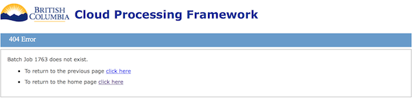

Administration
This page describes how to use the CPF administration application to manage the CPF and business application plug-ins.
Overview
The following sections provide a quick jumping point to various administration tasks.
Configuring CPF
The following sections describe how to configure the CPF.
- Configure any CPF Configuration Properties.
- Add the administration users to the CPF_ADMIN User Group.
Adding Modules
The following sections describe how to manage users, groups and permissions the CPF.
- Add a new Module.
- Configure any Module Configuration Properties documented in the plug-ins readme.
- Configure any Business Application Configuration Properties documented in the plug-ins readme.
- Add the module administration users to the Module Admin User Groups.
- Add users to the Module User Groups documented in the plug-ins readme.
- Add any User Group Permission documented in the plug-ins readme.
Security
The following sections describe how to manage users, groups and permissions the CPF.
- View and manage User Accounts.
- View and manage [User Groups](#User Group).
- View and manage User Group Permission.
Monitoring
The following sections describe how to monitor the CPF.
- View Module Status.
- View and manage Batch Jobs.
- View Dashboard Statistics.
- View Workers, Module Status and Worker Executing Group List.
- View Log Files
Module
Module Overview
The business application plug-ins are deployed to CPF as Maven Modules. For each plug-in a new Module is created in the admin application that specifies a module name and maven module id.
The CPF then automatically downloads the Maven Module from the maven servers when the module is started. TheCPF caches modules in the local Maven Repository Cache Directory. More details on plug-in modules can be viewed in the Plug-in Developers Guide.
In addition to the module administration pages described here the following pages describe how to manage items related to a module.
- Business Application
- Configuration Property
- Dashboard Statistics
- Business Application Jobs
- Module User Groups
- Module Admin User Groups
- User Group Permissions
- Module Configuration Properties
NOTE The user must be in the ADMIN, ADMIN_MODULE_[MODULE_NAME]ADMIN, or ADMIN_MODULE[MODULE_NAME]_SECURITY groups to manage modules. Module admins will only see modules they are admins for.
Module Fields
The following table summarizes the fields used for modules.
| Field | Description |
|---|---|
| Module Name | The upper case name (acronym) for the module (e.g. BGEO,DEMO). Consult the plug-ins readme for the correct value to use. |
| Maven Module ID | The maven module Id for a module plug-in in the format {groupId}:{artifactId}:{version} (e.g com.myapplication:demo:1.0.0-SNAPSHOT). Consult the plug-ins readme for the correct value to use. When a new non-snapshot version is deployed the version part must be updated to the new version. |
| Enabled | Flag to control if the module is enabled. If not enabled the plug-in will be stopped on the master and worker and won't be available for clients to submit jobs. Disabled modules may cause broken links from jobs to apps and modules. |
| Status | The current status of the module. Disabled, Enabled, Stopped, Stop Requested, Started, Start Requested, Starting, Start Failed. |
| Started | Flag indicating if the module has been started. |
| Start Time | The timestamp when the module was started or blank if it has not been started. |
| Module Error | Error message and stack trace if the module could not be started. |
| Actions | The actions field will display buttons depending on the state of the module.
|
Module List
The modules page contains a scrolling table of the modules. The contents of this table can be filtered by typing at least 3 characters in search box. The table will show modules where the name, maven module id, status, or start time contain those characters characters (ignoring case).
- Open the CPF Admin Application (e.g
http://localhost/cpf/admin/). - Click the
'Modules'menu item.
View Module
Modules can be viewed using the following steps.
- Open the Module List page.
- Scroll or search for the module.
- Click the link in the
Namecolumn.
Add Module
New modules can be added using the following steps
NOTE The user must be in the ADMIN group to add modules.
- Open the Module List page.
- Click button.
- Edit the field values.
- Enter a Module Name.
- Must be unique across all module names.
- Can only contain the characters
a-z,0-9, or_. - Automatically converted to upper case.
- Must not be one of the reserved words CPF, VIEW, EDIT, ADD, DELETE, APP, ADMIN, DEFAULT, COPY, CLONE, MODULE, GROUP.
- Enter the Maven Module Id.
- Select if the module is to be enabled.
- Enter a Module Name.
- Click the button to create the module, to undo any changes, or to return to the previous page.
Delete Module
A module can be deleted using the following steps.
NOTE The user must be in the ADMIN group to delete modules.
NOTE This will permanently delete the module, module configuration properties and module user groups. It will not delete any jobs for business applications in the module. Any uncompleted jobs will not complete unless the module is added again. To update a module to a new version edit the module rather than deleting and adding a new module.
- Open the Module List or View Module page.
- Click trash button in the
Actionsfield for the module to delete. - Click the button on the confirm delete dialog to delete the module, or to return to the page.
Edit Module
Modules can be edited using the following steps. only the Maven Module Id and enabled flag can be edited.
NOTE The user must be in the ADMIN group to edit modules.
NOTE Editing a module will cause an immediate restart of the module on the master and all workers.
- Open the View Module page.
- Click the button.
- Edit the field values.
- Enter the Maven Module Id.
- Select if the user is to be enabled.
- Click the button to save changes,
Revert to Savedto undo any changes, or to return to previous page.
Start Module
A module can be started using the following steps.
NOTE The user must be in the ADMIN group to start modules.
NOTE Starting a module will cause an immediate start of the module on the master and all workers.
- Open the Module List or View Module page.
- Click restart button in the
'Actions'field for the module to start. - Click the button on the confirm dialog to start the module, or to return to the page.
Restart Module
A module can be restarted using the following steps.
NOTE The user must be in the ADMIN group to restart modules.
NOTE Restarting a module will cause an immediate restart of the module on the master and all workers.
- Open the Module List or View Module page.
- Click restart button in the
'Actions'field for the module to restart. - Click the button on the confirm dialog to restart the module, or to return to the page.
Stop Module
A module can be stopped using the following steps.
NOTE The user must be in the ADMIN group to stop modules.
NOTE Stopping a module will cause an immediate stop of the module on the master and all workers.
- Open the Module List or View Module page.
- Click stop button in the
'Actions'field for the module to stop. - Click the button on the confirm dialog to stop the module, or to return to the page.
Application
Business Application Overview
Each CPF Module can contain one or more business application. This page describes how to manage those business applications.
In addition to the business application administration pages described here the following sections describe how to manage items related to a business application.
NOTE: The user must be in the ADMIN, or ADMIN_MODULE_[MODULE_NAME]_ADMIN groups to manage business applications. Module admins will only see business applications they are module admins for.
Business Application Fields
The following table summarizes the fields used for business applications.
| Name | Description |
|---|---|
| Name | The name of the module. Used for links and to flag the app for a job. |
| Module | The name of the Module the business application is loaded from. |
| Title | The display title shown on the web app for the business application. |
| Description Url | URL to an external page providing more documentation for the module. |
| Log Level | The level log logging ERROR, INFO, DEBUG. ERROR should be used unless there is an issue to be diagnosed. INFO and DEBUG generate large log files and slow down the application. |
| Test Mode Enabled | Flag indicating if the web services show the test mode fields when submitting a job. |
| Batch Mode Permission | The permission to restrict access to submission of jobs. |
| Instant Mode Permission | The permission to restrict access to submission of instant mode requests. |
| Geometry Factory | The geometry factory that all geometries will be converted to before execution on the plug-in. |
| Validate Geometry | Flag indicating if the geometries should be validated and rejected if invalid before execution by the plug-in. |
| Per Request Input Data | Flag indicating if the plug-in accepts multiple files with each file being a separate request or a single structured data file with each record being a separate request. |
| Input Data Content Types | The list of MIME types of for the supported input data files. |
| Has Geometry Request Attribute | Flag indicating if the business application accepts a geometry as one of the request parameters. |
| Per Request Result Data | Flag indicating if the plug-in returns a separate file for each request or generates a single structured data file with each record being a the result for each request. |
| Result Data Content Types | The list of MIME types of for the supported result data file formats. |
| Has Customization Properties | Flag indicating if the plug-in customizes the form or result formats. |
| Result List Property | Flag indicating if the plug-in returns more than one result for a single request. |
| Has Result List Customization Properties | Flag indicating if the plug-in has customization properties on a result list property. |
| Has Geometry Result Attribute | Flag indicating if the business application returns a geometry as one of the result parameters. |
| Max Requests Per Job | The maximum number of requests that can be submitted in a job. Jobs with more requests than the maximum will be rejected. |
| Max Concurrent Requests | The maximum number of execution groups that will be scheduled at a single time. This should not be more than the total number of cpfWorker.maximumPoolSize across all workers. If plug-ins use database connections then it should not exceed the maximum database connection pool size or connection limits. |
| Num Requests Per Worker | The maximum number of requests that will be set in an execution group to a worker for sequential execution. The CPF splits the request into this number of execution groups when the job is pre-processed. The goal should be to have execution groups take between 1-10 seconds to execute on the worker. The balance should be between the size of data for an execution group and the execution time. This will help reduce the overhead of the system. For example if a request takes 10ms to run a value of 100 would take approximately 1 second to run on the worker. |
Permission Strings
Permissions are defined using a Spring Security Expression that if evaluated to true will grant the user permission.
The simplest permission is uses the hasRole function to see if the user is a member of a CPF group. The function takes a single argument that is the CPF group name. The following example grants access to all internal users.
hasRole('BCGOV_INTERNAL')
The hasAnyRole function will allow access if the user is a member of any of the listed groups. The following example grants access to all internal and business users.
hasAnyRole('BCGOV_INTERNAL','BCGOV_BUSINESS')
This could also be written using the or operator.
hasRole('BCGOV_INTERNAL') or hasRole('BCGOV_BUSINESS')
The hasRoleRegex will allow users who have a CPF group that matches the Java regular expression. The following example matches all CPF groups that start with BCGOV
hasRoleRegex('BCGOV_.*')
The permission permitAll grants all users permission.
The permission denyAll grants no users permission.
Business Application List
The business applications pages contain a scrolling table of the business applications for a module. The contents of this table can be filtered by typing at least 3 characters in search box. The table will show business applications where the name, module or title contain those characters characters (ignoring case).
All Business Applications List
The list of all business applications a user has permission for can be viewed using the following steps.
- Open the CPF Admin Application (e.g
http://localhost/cpf/admin/). - Click the
'Business Applications'menu item.
Module Business Application List
The list of business applications for a module can be viewed using the following steps.
- Open the View Module page.
- Click the
'Business Applications'tab.
View Business Application
Business Applications can be viewed using the following steps.
- Open one of the Business Application List pages.
- Scroll or search for the business application.
- Click the link in the
'Name'column.
Edit Business Application
Business Applications can be edited using the following steps.
NOTE: Editing a business application will require a manual restart of the module for the settings to take affect.
- Open the View Business Application page.
- Click the .
- Edit the field values.
- Click the button to save changes, to undo any changes, or to return to previous page.
Configuration
Configuration Property Overview
The CPF master web application, CPF workers and modules can be configured by setting config properties.
Configuration Property Fields
The following table summarizes the fields used for configuration properties.
| Field | Description |
|---|---|
| Configuration Property Id | Unique sequence generated primary key for a configuration property. |
| Environment Name | The environment name the configuration property will be used for. |
| Module Name | The name of the module the configuration property applies to. The special module names CPF and CPF_WORKER are used for CPF configuration properties. |
| Property Name | The name of the property. |
| Value | The value of the property. |
| Value Type | The data type the value will be converted to. |
Environment Name
The configuration properties support the concept of having different configuration properties for different environments. Environment names are currently only used for workers.
The special environment name ‘default’ is used as a default value if a configuration property is not created for an environment. For most properties the value of ‘default’ should be used.
For example the system could have two worker servers. The first has 2 CPUs and the second has 4. The first could support 16 threads and the second 32 threads. Two environment names 2cpu and 4cpu could be created. The first worker’s environment name would be set to 2cpu and the second 4cpu. A configuration property can be created for the property name cpfWorker.maximumPoolSize for each environment with the values 16 and 32 respectively.
Data Type
| Type | Description |
|---|---|
string |
String |
boolean |
Boolean |
long |
Long |
int |
Int |
double |
Double |
float |
Float |
short |
Short |
byte |
Byte |
decimal |
Big Decimal |
integer |
Big Integer |
QName |
Qualified name |
anyURI |
URI |
date |
Date (YYYY-MM-DD) |
dateTime |
Date + Time (YYYY-MM-DDTHH:MM:SS) |
Geometry |
WKT Geometry |
Point |
WKT Point |
LineString |
WKT LineString |
Polygon |
WKT Polygon |
GeometryCollection |
WKT Geometry Collection |
MultiPoint |
WKT Multi-Point |
MultiLineString |
WKT Multi-LineString |
MultiPolygon |
WKT Multi-Polygon |
Configuration Property List
The configuration properties page contains a scrolling table of the configuration properties. The contents of this table can be filtered by typing at least 3 characters in search box. The table will show configuration properties where the environment name, module name, property name, or property value contain those characters characters (ignoring case).
CPF Configuration Properties
The list of configuration properties for the CPF Master and CPF Worker can be viewed using the following steps.
NOTE: The user must be in the ADMIN user group.
- Open the CPF Admin Application (e.g
http://localhost/cpf/admin/). - Click the
'Configuration Properties'menu item.
Module Configuration Properties
The list of configuration properties for a module can be viewed using the following steps.
NOTE: The user must be in the ADMIN, or ADMIN_MODULE_[MODULE_NAME]_ADMIN groups.
NOTE: Consult the module’s readme file for details on the supported configuration properties.
- Open the View Module page.
- Click the
'Configuration Properties'tab.
Business Application Configuration Properties
The list of configuration properties for a business application can be viewed using the following steps.
NOTE: The user must be in the ADMIN, or ADMIN_MODULE_[MODULE_NAME]_ADMIN groups.
NOTE: Consult the module’s readme file for details on the supported configuration properties for a business application.
- Open the [View Business Application](#View Business Application) page.
- Click the
'Configuration Properties'tab.
View Configuration Property
Configuration properties can be viewed using the following steps.
- Open one of the Configuration Property List pages.
- Scroll or search for the configuration property.
- Click the link in the ‘ID’ column.
Add Configuration Property
Configuration properties not shown in the list can be added using the following steps. See
CPF Master and CPF Workers for the supported configuration properties. Consult the plug-in’s documentation for the configuration properties they support
- Open one of the Configuration Property List pages.
- Click button.
- Edit the field values.
- Click the button to create the configuration property, to undo any changes, or to return to the previous page.
Delete Configuration Property
A configuration property can be deleted using the following steps.
- Open one of the Configuration Property List or View Configuration Property pages.
- Click trash button in the
'Actions'field for the configuration property to delete. - Click the button on the confirm delete dialog to delete the configuration property, or to return to the page.
Edit Configuration Property
Configuration properties can be edited using the following steps.
- Open the View Configuration Property page.
- Click the ‘Edit button’.
- Edit the field values.
- Click the button to save changes, to undo any changes, or to return to previous page.
Configuration Property Names & Descriptions
This section describes the configuration properties used for the CPF master web application and CPF workers.
The CPF uses Java Properties files for bootstrap configuration of the CPF master web application and CPF workers. In the properties files use ‘=’ not ‘:’ between the keys and values and escape any ‘:’ characters in property values using ‘:’. Properties with a tick in the ‘Admin App’ column can also be defined using the admin application.
NOTE: Any changes to configuration properties using the admin application or in the properties file will require the CPF master or CPF worker to be restarted for these properties to take affect.
CPF Master Configuration Properties
The CPF master web application requires the following properties to be defined in the /apps/config/cpf.properties file. The master will ignore any other properties in this file. So where the master and worker are on the same machine they can share the same configuration file.
| Property Name | Description | Admin App | Data Type | Example |
|---|---|---|---|---|
cpfConfig.baseUrl |
The HTTP URL to the OAuth/Digest secured CPF web services, including context path on the server cpf is deployed to. The trailing / must be omitted. |  |
URI | http://localhost/cpf/ |
cpfDataSource.url |
The JDBC URL to the cpf database. | |
URI | jdbc:oracle:thin:@localhost:1521:cpf or jdbc\:postgresql\://localhost\:5432/cpf |
cpfDataSource.password |
The password for the PROXY_CPF_WEB user account. | |
String | c0ncurr3n7 |
batchJobService.maxWorkerWaitTime |
The maximum time (in seconds) the worker will wait in a HTTP request for group to process before trying a new HTTP request. This limits the number of polling requests to the server. Must be less than any HTTP server inactivity timeouts. |  |
int | 100 |
batchJobService.fromEmail |
The email address any emails will be sent from. | |
String | cpf@localhost |
mailSender.host |
The mail server to send emails via. | |
String | localhost |
| removeOldBatchJobs.daysToKeepOldJobs | The number of days that jobs will be kept after the results have been created. After that time the jobs will be removed in the next daily cleanup. | |
int | 7 |
CPF Worker Configuration Properties
The CPF worker web application requires the following properties to be defined in the /apps/config/cpf.properties file. The worker will ignore any other properties in this file. So where the worker and master are on the same machine they can share the same configuration file.
| Property Name | Description | Admin App | Data Type | Example |
|---|---|---|---|---|
cpfConfig.internalWebServiceUrl |
The HTTP URL to the CPF web services behind any reverse proxies. This is used to speed up access from the workers. | |
URL | http://localhost/pub/cpf |
cpfWorker.password |
The password for the cpf_worker user account. | |
String | cpf_w0rk3r |
cpfWorker.environmentName |
The environment name used for the worker. | |
String | default |
cpfWorker.maximumPoolSize |
The maximum number of threads on the worker used to execute requests. | |
int | 32 |
Tuning
This section describes the parameters available for tuning the performance and resources used by the system. This section does not include memory tuning as that depends on the specific memory usage for each business application.
Master Tuning
The tuning parameters for the master can be viewed using the 'Tuning' page (e.g. http://localhost/cpf/admin/tuning/). The tuning page shows the number of active threads or connections, the current pool size, largest pool size reached, and the maximum pool size. The maximum pool sizes can be configured using the button. Changes to the pool sizes will be applied upon saving. If the current active count is greater than the new pool size then those active threads or connections will still be used until they are returned to the pool.
The table below shows the thread and database connection pools that can be configured to tune the system.
| Name | Description | Example Value |
|---|---|---|
| Pre Process Thread Pool Size | The number of threads that can be used to pre-process new jobs. The pre-processing splits the structured input data requests into groups of requests for execution. During pre-processing a datbase connection will typically be held for the entire duration of the pre-processing. Pre-processing is typically I/O bound. | 8 = Num Cores * 10% * 5 (thread multiplier) |
| Scheduler Thread Pool Size | The number of threads that can be used to schedule groups for jobs. The scheduler reads the structured data for the group from the database into memory. The scheduling operation is typically very fast for groups with small amounts of data. Scheduling is typically I/O bound. | 16 = Num Cores * 20% * 5 (thread multiplier) |
| Group Result Thread Pool Size | The number of threads that can be used to process the group results from the workers via the internal web service. This is not a separate pool of threads. Instead it is the number of servlet container request handling threads that can be processing the group results. If the maximim pool size is reached the web service request will be bocked until a free slot is available. The group results operation is typically very fast for groups with small amounts of data. Processing group results is typically I/O bound. | 16 = Num Cores * 20% * 5 (thread multiplier) |
| Post Process Thread Pool Size | The number of threads that can be used to post-process completed jobs. The post-processing creates the structured result file from the results from the execution groups. During post-processing a datbase connection will typically be held for the entire duration of the post-processing. Post-processing is typically I/O bound. | 8 = Num Cores * 10% * 5 (thread multiplier) |
| Database Connection Pool Size | The number of database connections available to all web service and threads on the CPF master application. The minimum value for this is 10% greater than the sum of (Pre Process + Scheduler + Group Result + Post Process) pool sizes. | 60 = (Pre Process + Scheduler + Group Result + Post Process) * 125% |
The size of the thread pools will depend on the number of processor cores. The example values shown are for a 4 processor system, each processor with 4 cores. This gives a total of 8 cores (2 * 4).
The number of threads configured for the CPF thread pools can exceed the number of cores available on the server. In this case the operating system will schedule the different threads for execution. For processes that are I/O bound (network connections, database calls, or file I/O) the thread will be paused when the I/O operation is blocked. This allows other threads to execute. For I/O bound tasks the number of connections in the pool can be increased to take advantage of the idle time during blocked I/O operations. In the examples this is indicated as the thread multiplier.
NOTE: the other load on the server should also be considered when defining the size of the pools. The first factor is the number of threads that the servlet container is configured for serving HTTP requests. These connections will consume additional database connections for the CPF web service and CPF admin requests. Also if the database is on the same server then less threads will be available for the CPF.
NOTE: The exact values for a specific system will need to be defined by experimenting with typical workloads for the business application and server hardware configurations.
Worker Tuning
The CPF worker has a single tuning property cpfWorker.maximumPoolSize. This defines the number of threads used to process groups of requests. The value for this property should be about the same as the Group Result Pool Size on the CPF master. Although if the groups take a lot longer to execute than it takes to save the results on the master then this value can be greater (e.g. 2x or 5x) than the Group Result Pool Size.
If the business applications are processor rather than I/O bound then the pool size can be reduced to avoid processor thrashing when switching between threads.
NOTE: the worker pool size can only be configured in the properties file. See CPF Worker Configuration Properties to set the
cpfWorker.maximumPoolSize.
Application Tuning
The final part of tuning is the application tuning. See Business Application Fields to see the full description of the application tuning parameters and how to edit them.
The first parameter numRequestsPerWorker controls the number of requests bundled into an execution group to send to the worker. The group size should be configured for business applications that only take milliseconds to process each request. In this case the value can be set to about 100 so that the group execution time takes 1-5 seconds. This reduces the communications overhead per request due to bundling into a group. The value should not be set to large as it will then result in more memory when the group is scheduled and for storage in the database. This could slow down the scheduler.
NOTE: This value is applied at the time a job is created and can’t be changed for that job afterwards. New jobs get the new group size.
The second parameter maxConcurrentRequests controls how many groups for the business application can be scheduled at one time. The actual limit for the concurrent groups executing will depend on the number of threads specified in cpfWorker.maximumPoolSize. For slow business applications this can be used to limit the number of concurrent groups so that it does not prevent other apps from being processed. For fast business applications this could be configured to be greater than the pool of threads on the worker. This has the affect of pre-loading the scheduling queue so that work is ready for the worker as soon as the previous group results are finished.
User
User Account Overview
The CPF maintains a table of user accounts. These user accounts are used to authenticate (login) access to the CPF web services and admin application. The user accounts are also used to assign users to user groups.
NOTE: The master and worker for a given user may cache user accounts, user groups and user group permissions for up to 5 minutes. Wait 5 minutes if the user doesn’t have the correct permissions after a change.
NOTE: The user must be in the ADMIN user group to view the list of all user accounts and to manage user accounts.
User Account Fields
The following table summarizes the fields used for user accounts.
| Field | Description |
|---|---|
| User Account Id | Unique sequence generated primary key for a user account. |
| Consumer Key | The unique name for the user account. For CPF user accounts this is their login name. |
| Consumer Secret | The password/signing key for the user. For CPF user accounts this can be modified in the admin application, end users can't change it. |
| User Account Class | The class of user account CPF or BCGOV. |
| User Name | For CPF classes the user name will be kept in-sync with the consumer key. |
| Active | Boolean flag indicating if the user is active. Setting to false will prevent the user from accessing the CPF. |
User Account Classes
The CPF provides support for multiple classes of user accounts. Developers can add new types of user account class to link in with their existing security mechanisms. By default the CPF is installed with the CPF.
CPF User Account Class
The CPF user account class is used to authenticate access resource under /pub/cpf/ws/ and /pub/cpf/admin/. In the BC Government environments users with the CPF class can be created for applications (as opposed to end users) who are authorized to use the CPF. These applications use these accounts on the server side to access the CPF. In this case client JavaScript use is not recommended as there is no way to hide the consumer key or secret from end-users. In non BC Government environments (e.g. development) these can be used for end-users or developers.
Each CPF user account has a consumer key (User identifier) and consumer secret (Password/signing key). These are used by the user when authenticating using one of the following two authentication mechanisms.
- HTTP Digest Access Authentication - Supported by most web browsers.
- OAuth 1.0 - Supported by the CPF Java API for direct application access to the CPF.
The CPF is installed with the following two accounts defined.
| Consumer Key | Description |
|---|---|
| cpf_admin | The initial user account that has access to the CPF admin application. For production environments user accounts should be created for each admin user. Those accounts must be added to the ADMIN user group. Once you have been able to login using your own admin account the cpf_admin account should be deactivated. |
| cpf_worker | The user account that the CPF worker processes use to connect to the CPF internal web service. The name and password of this account can be changed as long as the worker is configured to use the new values. Additional worker user accounts can be added. These accounts must be added to the WORKER user group. |
User Account List
The user accounts page contains a scrolling table of the user accounts. The contents of this table can be filtered by typing at least 3 characters in search box. The table will show user accounts where the consumer key, user account class or user name contain those characters characters (ignoring case).
- Open the CPF Admin Application (e.g
http://localhost/cpf/admin/). - Click the
'User Accounts'menu item.
View User Account
User accounts can be viewed using the following steps.
- Open the User Account List page.
- Scroll or search for the user account.
- Click the link in the
'Consumer Key'column.
Add User Account
New user accounts can be added using the following steps. Only accounts with the CPF class can be added, therefore the User Account Class field is not shown as it is set to CPF. The created user account’s user name field will be set to the consumer key entered.
- Open the User Account List page.
- Click ‘Add’ button.
- Edit the field values.
- Enter a Consumer Key.
- Must be unique across all consumer keys from all classes.
- Can only contain the characters
a-z,0-9, and_. - Automatically converted to lower case.
- Enter a Password. A random UUID password is provided as a default.
- Select if the user is to be active.
- Enter a Consumer Key.
- Click the button to create the user account, to undo any changes, or to return to the previous page.
Delete User Account
A user account can be deleted using the following steps. This will also remove the user account from any user group and delete the user’s jobs. For the CPF class deleting accounts is permanent. For BCGOV class this deletes the record, but a new record will be created when the user next accesses CPF.
- Open the User Account List or View User Account page.
- Click trash button in the
'Actions'field for the user account to delete. - Click the button on the confirm delete dialog to delete the user account, or to return to the page.
Edit User Account
User accounts can be edited using the following steps. For the CPF class the consumer key, consumer secret and active flag can be edited. For the BCGOV class only the active flag can be edited.
- Open the View User Account page.
- Click the ‘Edit button’.
- Edit the field values.
- Enter a Consumer Key.
- Must be unique across all consumer keys from all classes.
- Can only contain the characters
a-z,0-9, and_. - Automatically converted to lower case.
- Enter a Password.
- Select if the user is to be active.
- Enter a Consumer Key.
- Click the button to save changes, to undo any changes, or to return to previous page.
User Group
User Group Overview
The CPF maintains a table of user groups. The CPF uses user groups to control access to the CPF admin application and for modules to define the permissions end users have to use the business applications.
NOTE: The master and worker for a given user may cache user accounts, user groups and user group permissions for up to 5 minutes. Wait 5 minutes if the user doesn’t have the correct permissions after a change.
User Group Fields
The following table summarizes the fields used for user groups.
| Field | Description |
|---|---|
| User Group Id | Unique sequence generated primary key for a user group. |
| Module Name | The module name of the CPF component or plug-in module that the group is owned by. |
| User Group Name | The unique name of the user group.
|
| Description | A human readable description of the purpose of the group. |
| Active | Boolean flag indicating if the group is active. Setting to false will prevent the group from being used to control security policies. |
User Group Module Name
The following table describes the Module Name’s that are used for User Groups.
| Module Name | Description |
|---|---|
| GLOBAL | A global user group that can be used across all modules. |
| ADMIN | Only used for the ADMIN group that defines the users who are global administrators. |
| WORKER | Only used for the WORKER group that defines the system users who can use the internal web service API. |
| USER_TYPE | Special groups that define sub classes of users for a specific user account class. Users can't be added to these types. Membership of these groups is automatically defined by the user account class plug-in for each user. It is not possible to get a list of users who are members of these groups. Security permissions can however be assigned to these users. |
| [MODULE_NAME] | Groups can be created for a module. These can then be used to grant permissions to use that module. The module groups must start with [MODULE]_ (e.g. TEST_CLIENTS). The Module Name in this case is the name of the module. |
| ADMIN_MODULE_[MODULE_NAME] | For each module a ADMIN_MODULE_[MODULE_NAME]_ADMIN (module administrator) and ADMIN_MODULE_[MODULE_NAME]_SECURITY (module security administrator) group are automatically created. Users can be added as members of these groups to grant them permission to manage the module. |
Default User Groups
The following table describes the user groups that are automatically created by the CPF. In addition to these new GLOBAL and plug-in module specific groups can be created.
| Module Name | Description |
|---|---|
| ADMIN | Global administrator users who can manage any aspect of the CPF using the CPF admin application. |
| SECURITY_ADMIN | Global security administrator users who can manage any security permission using the CPF admin application. |
| WORKER | Only used for the WORKER group that defines the system users who can use the internal web service API. |
| USER_TYPE | Special groups that define sub classes of users for a specific user account class. Users can't be added to these types. Membership of these groups is automatically defined by the user account class plugin for each user. It is not possible to get a list of users who are members of these groups. Security permissions can however be assigned to these users. |
| ADMIN_MODULE_[MODULE_NAME]_ADMIN | For each module a module administrator group is automatically created. Users can be added as members of these groups to grant them permission to manage the module. |
| ADMIN_MODULE_[MODULE_NAME]_SECURITY | For each module a module security administrator group id automatically created. Users can be added as members of these groups to grant them permission to manage the groups and security permissions for a module. |
User Group List
The user groups pages contain a scrolling table of the user groups. The contents of this table can be filtered by typing at least 3 characters in search box. The table will show user groups where the user group name, module name, description contain those characters (ignoring case).
All User Group List
The list of all user groups can be viewed using the following steps.
NOTE: The user must be in the ADMIN user group.
- Open the CPF Admin Application (e.g
http://localhost/cpf/admin/). - Click the
'User Groups'menu item.
Module User Group List
The list of module specific user groups can be viewed using the following steps. The list also includes the USER_TYPE and GLOBAL user groups so that permissions can be granted to them.
NOTE: The user must be in the ADMIN, ADMIN_MODULE_[MODULE_NAME]ADMIN, or ADMIN_MODULE[MODULE_NAME]_SECURITY groups.
NOTE: If a GLOBAL group is viewed from this page then the option to delete the group or view, add, or remove members from the group will not be available. That is only available from the All User Group List page.
- Open the Module View page.
- Click the ‘User Groups’ tab.
Module Admin User Group List
The list of admin user groups for a module can be viewed using the following steps.
NOTE: The user must be in the ADMIN, or ADMIN_MODULE_[MODULE_NAME]_ADMIN groups.
- Open the Module View page.
- Click the
'Module Admin User Groups'tab.
View User Group
The details of a user group can be viewed from the [User Group List][User_Group_List] pages.
- Open one of the [User Group List][User_Group_List] pages.
- Scroll or search for the group to view.
- Click the link in the ‘User Group Name’ column for the group.
Add User Group
Add a Global User Group
New global user groups can be added using the following steps. Only accounts with the GLOBAL module name can be created using these steps.
NOTE: The user must be in the ADMIN user group.
- Open the All User Group List page.
- Click button on the ‘User Groups’ page.
- Enter a User Group Name.
- Must be unique across all user groups from all modules.
- Can only contain the characters
A-Z,0-9, and_. - Automatically converted to upper case.
- Must start with
GLOBAL_. - Must have additional characters after
GLOBAL_.
- Enter a human readable description of the purpose of the group.
- Select if the group is to be active.
- Enter a User Group Name.
- Click the button to create the user group, to undo any changes, or to return to the user groups page.
Add Module User Group
New user groups for a module can be added using the following steps. Only accounts with the [MODULE_NAME] module name can be created using these steps.
- Open the Module User Group List page.
- Click button on the ‘User Groups’ page.
- Enter a User Group Name.
- Must be unique across all user groups from all modules.
- Can only contain the characters
A-Z,0-9, and_. - Automatically converted to upper case.
- Must start with the [MODULE_NAME]_ (e.g. TEST_).
- Must have additional characters after [MODULE_NAME]_ (e.g. TEST_USERS).
- Enter a human readable description of the purpose of the group.
- Select if the group is to be active.
- Enter a User Group Name.
- Click the button to create the user group, to undo any changes, or to return to the user groups page.
Delete User Group
Only global or module groups can be deleted. All other groups are managed by the system. Deleting a group will permanently delete the group, list of group members and any permissions granted to the group.
Delete Global User Group
NOTE: The user must be in the ADMIN user group.
- Open the All User Group List, or View User Group page.
- Click the trash can button in the
'Actions'field for the the group. - Click in the confirmation dialog to delete the group, or to return to the page without deleting.
Delete Module User Group
NOTE: The user must be in the ADMIN, ADMIN_MODULE_[MODULE_NAME]ADMIN, or ADMIN_MODULE[MODULE_NAME]_SECURITY groups.
- Open the Module User Group List, or View User Group page.
- Click the trash can button in the
'Actions'field for the the group. - Click in the confirmation dialog to delete the group, or to return to the page without deleting.
Edit User Group
Only global or module groups can be edited. All other groups are managed by the system.
Edit Global User Group
NOTE: The user must be in the ADMIN user group.
- Open the View User Group page.
- Click the button.
- Edit the field values.
- Click the button to save changes, to undo any changes, or to return to the previous page.
Edit Module User Group
NOTE: The user must be in the ADMIN, ADMIN_MODULE_[MODULE_NAME]ADMIN, or ADMIN_MODULE[MODULE_NAME]_SECURITY groups.
- Open the View User Group page.
- Click the button.
- Edit the field values.
- Click the button to save changes, to undo any changes, or to return to the previous page.
User Accounts for a Group
Each group has the list of the user accounts who are members of that group. The user accounts in the group will inherit any permissions granted to the group. The user accounts for a group can be viewed managed using the following instructions. The exception is the USER_TYPE group, which has implicit members based on the user accounts. The list of user accounts cannot be viewed and managed for those groups.
NOTE: The CPF caches the groups a user is a member of for up to 5 minutes. If adding or removing users from a group wait at least 5 minutes before testing.
User Accounts for Group List
The user accounts for group list contains a scrolling table of the user accounts who are members of a user group. The contents of this table can be filtered by typing at least 3 characters in search box (on the top right of the table). The table will show user accounts where the user account consumer key, user account class or user name contain those characters (ignoring case).
- Open the View User Group page.
- Click on the
'User Accounts for Group'tab.
Add User Account to Group
A user account can be added as a member of a group using the following steps.
- Open a User Accounts for Group List page.
- Type at least 3 characters in the
'Username'field on the top left of the form. This will show a drop down of matching names. Select the required name from the list. Type more characters if the required name is not shown. If the user is not shown have them login to the CPF web services to make sure the user account is in the CPF database. - Click the button to add the user account to the group.
Delete User Account from Group
A user account can be deleted from being a member of a group using the following steps.
- Open a User Accounts for Group List page.
- Scroll or search for the user account.
- Click the trash can button in the ‘Actions’ field for the the user account.
- Click in the confirmation dialog to delete the user account from the group, or to return to the page without deleting.
User Group Permission
CPF modules can use User Group Permissions to grant permissions for users who are a member of a group permission to perform an action on a resource. Permissions are granted to a User Group for a Module. Cross module permissions are not supported. User group permissions grant the group permission to perform an action (Action Name) on a resource (Resource Class + Resource Id). For example view (Action Name) the reportUrl (Resource Class) https://reports.com/demoReport.json (Resource Id).
NOTE: NOTE: CPF itself does not use user group permissions. Each CPF module can decide if & how they use user group permissions. Consult the module’s readme file for details on the supported resource classes, resource id schemes and action names.
NOTE: NOTE: The master and worker for a given user may cache user accounts, user groups and user group permissions for up to 5 minutes. Wait 5 minutes if the user doesn’t have the correct permissions after a change.
NOTE: The user must be in the ADMIN, ADMIN_MODULE_[MODULE_NAME]ADMIN, or ADMIN_MODULE[MODULE_NAME]_SECURITY user groups to view and manage user group permissions for a module.
User Group Permissions Fields
The following table summarizes the fields used for user group permissions.
| Field | Description |
|---|---|
| User Group Permission Id | Unique sequence generated primary key for a user group permission. |
| Module Name | The name of the CPF module the permission was created for. |
| User Group Name | The name of the user group the permission applies to. |
| Resource Class | The resource class is the categorization of the resource. For example databaseInstance, schemaName, tableName, url, reportUrl. Modules are free to decide on their own resource classes, consult the module readme for more details. The special resource class ALL grants the users permission for all resource classes. |
| Resource Id | The unique identifier of the resource within the resource class that the users in the group have permission to perform the action. For example a record primary key, resource URL, report name. Modules are free to decide on their own resource id schemes, consult the module readme for more details. The special resource id ALL grants the users permission for all resources in the resource class. |
| Action Name | The name of the action users in the group are able to perform on the resource. For example ALL, view, edit. The special action name ALL grants the user permission for all actions on the resource. |
| Active | Boolean flag indicating if the user is active. Setting to false will prevent the user from accessing the CPF. |
User Group Permission List
The user group permission page contains a scrolling table of the permissions for a user group. The contents of this table can be filtered by typing at least 3 characters in search box. The table will show user group permissions where the user group permission id, resource class, resource id or action name contain those characters characters (ignoring case).
- Open the Module User Group List page.
- Scroll or search for the group.
- Click the link in the
'User Group Name'column for the group. - Click the
'User Group Permissions'tab. - Scroll or search for the permission.
View User Group Permission
User group permissions can be viewed using the following steps.
- Open a User Group Permission List page.
- Scroll or search for the user group permission.
- Click the link in the
'User Group Permission Id'column.
Add User Group Permission
New user group permissions can be added using the following steps.
- Open a User Group Permission List page.
- Click button.
- Enter the field values. Consult the plug-in’s readme for more information.
- Click the button to create the user group permission, to undo any changes, or to return to the previous page.
Delete User Group Permission
A user group permission can be deleted using the following steps.
- Open a User Group Permission List or View User Group Permission page.
- Click trash button in the
'Actions'field for the user group permission to delete. - Click the button on the confirm delete dialog to delete the user group permission, or to return to the previous page.
Edit User Group Permission
User group permissions can be edited using the following steps.
- Open the View User Group Permission page.
- Click the button’.
- Edit the field values.
- Click the button to save changes, to undo any changes, or to return to the previous page.
Jobs
Batch Jobs Overview
The main purpose of the CPF is to execute batch jobs on behalf of users. The CPF admin application can be used to view the list of jobs in the system and to monitor the progress of the execution of the batch job execution groups.
NOTE: The user must be in the ADMIN, or ADMIN_MODULE_[MODULE_NAME]_ADMIN user groups to view batch jobs. The module admins will only be able to see batch jobs for their modules.
Batch Job List
The batch job list pages contain a scrolling table of the batch jobs. The contents of this table can be filtered by typing at least 3 characters in search box. The table will show batch jobs where the id, business application, start time, modification time, job status, submitted requests, completed requests, failed requests or user id contain those characters characters (ignoring case).
All Batch Job List
The all batch jobs page shows the batch jobs for all business applications the user has admin permission for.
The batch jobs can be viewed using the following steps.
- Open the CPF Admin Application (e.g
http://localhost/cpf/admin/). - Click the
Batch Jobsmenu item.
Business Application Batch Job List
The business application batch jobs page shows the batch jobs for a business application that the user has admin permission for.
- Open a View Business Application page.
- Click the
'Batch Jobs'tab.
View Batch Job
The batch jobs can view viewed using the following steps.
- Open one of the Batch Job List pages.
- Scroll/Search for the batch jobs to view.
- Click the link in the ‘Id’ column.
Delete Batch Job
A batch job can be deleted using the following steps. This will also cancel any scheduled groups, delete the execution groups and result files .
- Open the Batch Job List or View Batch Job List page.
- Click trash button in the
'Actions'field for the batch job to delete. - Click the button on the confirm delete dialog to delete the batch job, or to return to the page.
Batch Job Execution Group List
The batch job execution group list page contain a scrolling table of the execution groups. The contents of this table can be filtered by typing at least 3 characters in search box. The table will show batch job execution groups where the sequence number (#), completed (count), failed (count), submitted (count), creation time or modification time contain those characters characters (ignoring case).
- Open the View Batch Job List page.
- Click the
'Execution Groups'tab. - To download the input data click on the button in the Input column.
- To download the result data click on the button in the Result column. A red x will be shown if the group has not been completed.
Batch Job Result File List
When the batch job is completed the batch job result file list page contain a scrolling table of the result files. The contents of this table can be filtered by typing at least 3 characters in search box. The table will show batch job result files where the sequence number (#), result type, content type, creation time or download time contain those characters characters (ignoring case).
- Open the View Batch Job List page.
- Click the
'Result Files'tab. 3.To download the file click on the button in the Download column.
Statistics
Dashboard Statistics Overview
The CPF collects statistics for all phases of job processing. These statistics are collated for each hour and business application. Statistics are automatically rolled up for each day, month and year.
NOTE: The user must be in the ADMIN, or ADMIN_MODULE_[MODULE_NAME]_ADMIN user groups to view statistics. The module admins will only be able to see statistics for their modules.
The following table shows the statistics that are displayed on the View Statistics pages.
| Field | Description |
|---|---|
| Duration Type | The type of duration (hour, day, month, year) that the statistics were calculated for. |
| Start Time | The start time of the time period the statistics were calculated for. |
| End Time | The end time of the time period the statistics were calculated for. |
| Jobs Completed | Statistics calculated for jobs that were completed during the time period. Statistics are split by jobs and requests. Statistics are calculated for the total execution average time, total of all times and a count. |
| Jobs Submitted | Statistics calculated for jobs that were submitted during the time period. Statistics are not calculated for requests as this is not known until the pre-processing stage. Statistics are calculated for the average and total times to process the job submission and a count. |
| Jobs Pre-Process Scheduled | Statistics calculated for jobs that were scheduled for pre-processing during the time period. Statistics are calculated for the pre-process schedule average time, total of all times and a count. |
| Jobs Pre-Processed | Statistics calculated for jobs that were pre-processed during the time period. Statistics are split by jobs and requests. Statistics are calculated for the pre-process average time, total of all times and a count. |
| Jobs Request Groups Scheduled | Statistics calculated for job groups that were scheduled for execution during the time period. Statistics are calculated for the schedule average time, total of all times and a count. |
| Jobs Request Groups Executed | Statistics calculated for job groups that were executed during the time period. These times include master and worker time to execute the group including any wait times. Statistics are split by jobs and requests. Statistics are calculated for the job group execution average time, total of all times and a count. |
| Jobs Request Groups Application Executed | Statistics calculated for job groups that were executed during the time period. These times are the time the business application takes to execute the group without any overhead. Statistics are split by jobs and requests. Statistics are calculated for the job group application execution average time, total of all times and a count. |
| Jobs Post-Process Scheduled | Statistics calculated for jobs that were scheduled for post-processing during the time period. Statistics are calculated for the post-process schedule average time, total of all times and a count. |
| Jobs Post-Processed | Statistics calculated for jobs that were post-processed during the time period. Statistics are split by jobs and requests. Statistics are calculated for the post-process average time, total of all times and a count. |
Summary Statistics
The summary statistics page shows the statistics for all business applications the user has admin permission for. The page has tabs for summary statistics for the current ‘Hour’, total for ‘Today’, total for this ‘Month’ and totals for each ‘Year’. To view all time periods use the [Business Application Statistics}(#Business_Application_Statistics) page.
Each tab contains a scrolling table of the statistics. The contents of this table can be filtered by typing at least 3 characters in search box. The table will show statistics where the id, module, business application, jobs submitted, jobs completed, app groups executed, app requests completed, app requests failed contain those characters characters (ignoring case).
The statistics can be viewed using the following steps.
- Open the CPF Admin Application (e.g
http://localhost/cpf/admin/). - Click the
'Dashboard'menu item. - Click on the Hour, Today, Month or Year tabs to view statistics for those time periods.
Business Application Statistics
The business statistics tab shows the statistics for a business application. The tab has a single list containing all the statistics for the current ‘Hour’, total for ‘Today’, total for this ‘Month’ and totals for each ‘Year’.
Each tab contains a scrolling table of the statistics. The contents of this table can be filtered by typing at least 3 characters in search box. The table will show statistics where the id, duration type, jobs submitted, jobs completed, app groups executed, app requests completed, app requests failed contain those characters characters (ignoring case).
- Open the View Business Application page.
- Click the
'Dashboard'tab.
View Statistics
The statistics can view viewed using the following steps.
- Open the Summary Statistics, or Business Application Statistics page.
- Scroll/Search for the statistics to view.
- Click the link in the ‘Id’ column.
Worker
Workers Overview
The CPF uses multiple external worker processes to execute groups of requests from a batch job. The status of these workers can be viewed and groups restarted using the CPF Admin Application. The list of workers and modules is updated on the server whenever workers connect, disconnect or modules are started or stopped. These pages require manual refresh to view and changes.
Each worker is given a unique ID that will not change unless the component parts that make up the ID change. The ID is made up from the following components. Note the workerTomcatContextPath has any ‘/’ characters replaced by ‘-’.
{environmentName}:{workerHostName}:{workerTomcatPort}:{workerTomcatContextPath}
For example:
default:192.168.1.102:8009:pub-cpf-worker
NOTE: The user must be in the ADMIN user group to view workers.
Worker List
The worker list page shows a scrolling table of workers who have connected in the last 2 minutes. The contents of this table can be filtered by typing at least 3 characters in search box. The table will workers where the id or last connect time contain those characters characters (ignoring case).
- Open the CPF Admin Application (e.g
http://localhost/cpf/admin/). - Click the
'Workers'menu item.
View Worker
The worker can view viewed using the following steps.
- Open the Worker List page.
- Scroll/Search for the workers to view.
- Click the link in the
'Id'column.
Worker Executing Group List
The list of groups that are currently executing can be viewed using the following steps. This can be used to check for groups that have been running for too long. Note that this contents of this list changes very frequently as new groups are scheduled or completed.
- Open the View Worker page.
- Click the
'Executing Groups'tab.
Restart Worker Executing Group
If an execution group has been stuck on a worker it can be rescheduled using the following steps.
- Open a Worker Executing Group List page.
- Click the button in the
'Actions'column. - Click the button on the confirm restart dialog to restart the group, or to return to the page.
Worker Module List
The list of modules that are loaded on the worker cab be viewed using the following steps.
- Open the View Worker page.
- Click the
'Modules'tab.
View Worker Module
The full details of the module on the worker including any startup errors viewed using the following steps.
- Open the Worker Module List page.
- Click the link in the ‘Name’ column.
Log
Log Files & Diagnostics Overview
The CPF creates additional log files in addition to those created for the Apache web server and tomcat servlet container. These log files can be accessed on the machine that the master and worker are running on. These maybe exposed for download via the Apache web server if configured.
Log File Format
Each log file has lines with the following format, separated by tabs (\t).
{Date YYYY-MM-DD HH:MI:SS,SSS}\t{Level DEBUG, INFO,WARN, or ERROR}\t{Category}\t{Message}
For example:
2014-07-30 13:56:16,432 INFO CPF-TEST Start Module Start moduleName=CPF-TEST
Log entries may also have a java stack trace, shown on multiple lines. For example.
2014-07-17 17:08:25,305 ERROR ca.bc.gov.open.cpf.api.scheduler.BatchJobPreProcess Could not open JDBC Connection for transaction; nested exception is java.sql.SQLRecoverableException: IO Error: The Network Adapter could not establish the connection java.sql.SQLRecoverableException: IO Error: The Network Adapter could not establish the connection at oracle.jdbc.driver.T4CConnection.logon(T4CConnection.java:458) at oracle.jdbc.driver.PhysicalConnection.<init>(PhysicalConnection.java:546) at oracle.jdbc.driver.T4CConnection.<init>(T4CConnection.java:236) at oracle.jdbc.driver.T4CDriverExtension.getConnection(T4CDriverExtension.java:32) at oracle.jdbc.driver.OracleDriver.connect(OracleDriver.java:521) at oracle.jdbc.pool.OracleDataSource.getPhysicalConnection(OracleDataSource.java:280) at oracle.jdbc.pool.OracleDataSource.getConnection(OracleDataSource.java:207) at oracle.jdbc.pool.OracleConnectionPoolDataSource.getPhysicalConnection(OracleConnectionPoolDataSource.java:139) at oracle.jdbc.pool.OracleConnectionPoolDataSource.getPooledConnection(OracleConnectionPoolDataSource.java:88) at oracle.jdbc.pool.OracleImplicitConnectionCache.makeCacheConnection(OracleImplicitConnectionCache.java:1598) at oracle.jdbc.pool.OracleImplicitConnectionCache.makeOneConnection(OracleImplicitConnectionCache.java:515) at oracle.jdbc.pool.OracleImplicitConnectionCache.getCacheConnection(OracleImplicitConnectionCache.java:475) at oracle.jdbc.pool.OracleImplicitConnectionCache.getConnection(OracleImplicitConnectionCache.java:357) at oracle.jdbc.pool.OracleDataSource.getConnection(OracleDataSource.java:395) at oracle.jdbc.pool.OracleDataSource.getConnection(OracleDataSource.java:179) at oracle.jdbc.pool.OracleDataSource.getConnection(OracleDataSource.java:157) ... 13 more Caused by: oracle.net.ns.NetException: The Network Adapter could not establish the connection at oracle.net.nt.ConnStrategy.execute(ConnStrategy.java:392) at oracle.net.resolver.AddrResolution.resolveAndExecute(AddrResolution.java:434) at oracle.net.ns.NSProtocol.establishConnection(NSProtocol.java:687) at oracle.net.ns.NSProtocol.connect(NSProtocol.java:247) at oracle.jdbc.driver.T4CConnection.connect(T4CConnection.java:1102) at oracle.jdbc.driver.T4CConnection.logon(T4CConnection.java:320) ... 29 more Caused by: java.net.SocketTimeoutException: connect timed out at java.net.PlainSocketImpl.socketConnect(Native Method) at java.net.AbstractPlainSocketImpl.doConnect(AbstractPlainSocketImpl.java:339) at java.net.AbstractPlainSocketImpl.connectToAddress(AbstractPlainSocketImpl.java:200) at java.net.AbstractPlainSocketImpl.connect(AbstractPlainSocketImpl.java:182) at java.net.SocksSocketImpl.connect(SocksSocketImpl.java:392) at java.net.Socket.connect(Socket.java:579) at oracle.net.nt.TcpNTAdapter.connect(TcpNTAdapter.java:150) at oracle.net.nt.ConnOption.connect(ConnOption.java:133) at oracle.net.nt.ConnStrategy.execute(ConnStrategy.java:370) ... 34 more
Log Files
The following table summarizes the log files created by the CPF. The log files by default are stored in /apps/logs/cpf/. Each module and business application has separate directories for their log files. Log files will be rolled over once they reach 10MB. The last 7 log files will be retained with extensions .{i}.log (e.g. .2.log).
| File | Description |
|---|---|
catalina.out |
If running on tomcat the tomcat server log file. Exact file name and location will vary based on the servlet container used and it's configuration. If the CPF does not start check this log file for any errors. |
master.log |
All Log messages on the master. New log file created on module restart or if > 10MB. Previous 7 log files retained with extensions .{1-7}.log (e.g. .1.log). |
master-app.log |
Log messages for components on the master not related to a module or a business application. New log file created on module restart or if > 10MB. Previous 7 log files retained with extensions .{1-7}.log (e.g. .1.log). |
worker-{environmentName}-{hostName}-{port}-{contextPath}.log |
Log messages on the worker. New log file created on module restart or if > 10MB. Previous 7 log files retained with extensions .{1-7}.log (e.g. .1.log). |
worker-app-{environmentName}-{hostName}-{port}-{contextPath}.log |
Log messages for components on the worker not related to a module or a business application. New log file created on module restart or if > 10MB. Previous 7 log files retained with extensions .{1-7}.log (e.g. .1.log). |
{moduleName}/
{moduleName}_master.log
|
Log messages for a module's components on the master not related to a business application. New log file created on module restart or if > 10MB. Previous 7 log files retained with extensions .{1-7}.log (e.g. .1.log). |
{moduleName}/
{moduleName}_worker_{environmentName}_{hostName}_{port}_{contextPath}.log
|
Log messages for a module's components on the worker not related to a business application. New log file created on module restart or if > 10MB. Previous 7 log files retained with extensions .{1-7}.log (e.g. .1.log). |
{moduleName}/
{appName}/
{moduleName}_{appName}_master.log
|
Log messages for a business application's components on the master. New log file created on module restart or if > 10MB. Previous 7 log files retained with extensions .{1-7}.log (e.g. .1.log). |
{moduleName}/
{appName}/
{moduleName}_{appName}_worker_{environmentName}_{hostName}_{port}_{contextPath}.log
|
Log messages for a business application's components on the worker. New log file created on module restart or if > 10MB. Previous 7 log files retained with extensions .{1-7}.log (e.g. .1.log). |
Diagnosing Issues
This section describes how to diagnose issues with the CPF system or plug-ins running within the system.
The first step in diagnosing an issue is to detect if it is a plug-in specific issue that must be reported to the plug-in developer or a general CPF issue that must be reported to the CPF developer. The general rule is check to see if the problem is isolated to this plug-in by submitting jobs to other plug-ins (e.g. MapTileByTileId). If the error is specific to a single plug-in then contact the plug-in developer for resolution first. Only contact the CPF developer if the plug-in developer cannot resolve the issue.
Server Errors
Sometimes the server will return an error page instead of a valid page. The CPF returns a formatted and styled error page similar to as shown below. This kind of error is generated by the CPF application. If the server returns an unformatted page (black text on white background) then this is an error generated by the web server. For example the application server was down, or the CPF was not deployed. Those errors must be reported to the server administrator.

400 Bad Data
If the input data to the web service was incorrect the CPF may return a 400 error with a message about the invalid parameter. Check the parameters are correct using the Client REST API or the Overview tab for the business application. If the issue can’t be resolved by reading the documentation. contact the plug-in developer for business application specific parameters or the CPF developer for general CPF parameters.
404 Not Found
This error indicates that the resource could not be found. Verify that the plug-in is loaded, the resource exists (e.g. correct job id and hasn’t been deleted), or that the correct URL is used.
500 Server Error
This error indicates an unknown error has occurred on the server. Verify that the error can be repeated. Check the cpf-app.log or catalina.out log files for more details. The contents of these files should be sent to the CPF developer with a detailed description of the steps (pages) and parameters used to generate the error.
It may be possible to diagnose and resolve the following types of error without contacting the CPF developer.
java.io.IOExceptionsubclasses- If the error is a broken pipe within a tomcat/catalina stack trace then it’s probably that the connection from the web browser to the CPF process was disconnected. Not much can be done except increasing the timeouts for communications between the apache and tomcat servers.
- If the error is a file not found, permission denied, out of disk space error then verify the server configuration and check available disk space.
java.sql.SQLExceptionsubclasses- Check the error code/message to verify if it is an invalid username or password or for password expiry. Update the passwords or configuration as required.
- Check the error code/message to verify that the database server is available. It might be down for a cold backup, daily restart or maintenance. Verify the JDBC URL to check it’s pointing to the correct server
- Check the error code/message to verify if the database server was out of tablespace storage. Delete old jobs or increase the storage as required.
- Check the error code/message to verify if it’s an invalid SQL statement. If it is contact the CPF developer if it has CPF has a table schema name in the SQL, otherwise contact the plug-in developer.
java.lang.OutOfMemoryErrorThis could occur if the request data is to large to fit into memory or if the plug-ins or CPF has been re-dployed too many times and is not being garbage collected (perm gen errors). Typically this error will show up in the catalina.out file. Rebooting the application server is the best way to resolve these issues. If the error occurs repeatedly then verify that the-Xmxoption for tomcat is large enough for the business applications and for perm gen errors check the-XX:MaxPermSizeoption. The CPF and plug-ins should be developed so that they can be garbage collected when stopped or restarted. Details on this are in the client developers guide.org.springframework.security.authentication.*ExceptionThis indicates that the user is not valid or does not have permission to access the resource. Contact the CPF developer as these should not be logged in the log file and just displayed to the user.
Verify Plug-in Started
Use the following steps to verify that the plug-in is started on the master or worker.
- Check that the plug-in is enabled and started on the master using the View Module page.
- Enable the module if it is not enabled.
- Start the module if not started.
- If there is a module error:
- Check the master module log file
{moduleName}/{moduleName}_master.logfor more details on the error. - Check the configuration properties using the plug-ins documentation to verify they are correct. Especially check database URL, username and password.
- Check that the Maven Module Id is correct. Fix and start module if incorrect.
- If there is a Maven error downloading files verify that the Maven repository has all the required modules for the plug-in. Clear the CPF cache if necessary to reset the system. Verify using a web browser that the Maven modules exist in the Maven repository and can be downloaded. If not contact the Maven repository administrator.
- Check the master module log file
- Check there is a worker connected using the Worker List page.
- Check the module is started using the Worker Module List page.
- If not started check for module errors using the View Worker Module page.
- Check the worker module log file
{moduleName}/{moduleName}_worker_{environmentName}_{hostName}_{port}_{contextPath}.logfor more details on the error.
If the plug-in loaded successfully the master module log file {moduleName}/{moduleName}_master.log and worker module log file {moduleName}/{moduleName}_worker_{environmentName}_{hostName}_{port}_{contextPath}.log will be rolled over and the following entries will appear at the top of the log file.
2014-07-30 16:28:24,183 INFO [Module Name] Start Module Start moduleName=[Module Name] 2014-07-30 16:28:24,200 INFO [Module Name] Start Loading plugin class=[businessApplicationClass] 2014-07-30 16:28:24,212 INFO [Module Name] End Loading plugin class=[businessApplicationClass] businessApplicationName=[businessApplicationName] 2014-07-30 16:28:24,238 INFO [Module Name] End Module Start moduleName=[Module Name] time=0.06
Job Submission
Use the following steps if experiencing difficulty accessing the business application pages and in submitting instant, single or multiple request jobs.
- Using above verify the plug-in for the business application is started.
- Verify the business application is available on the
'Business Application'page in the client application. Refresh if necessary. If it does not appear in the list then the plug-in does not exist (contact plug-in developer) or is not loaded. - Click on the name of the business application and verify that the Overview, Create Single Request Job, Create Multi-Request Job and Batch Job Tabs are available. If the plug-in supports instant mode check the ‘Instant’ tab is visible. Click on each tab to verify it is displayed correctly.
- Use the Create Single Request Job and Create Multi-Request Job tabs to verify that a job can be submitted.
- If the job status page was returned then the job was submitted correctly.
- If you get a red error message at the top of the form or next to a field then the parameters were incorrect. Verify the parameters used. Consult the Overview tab for more details or the plug-in developer.
- If the size of a mult-request job file and other form parameters exceed 20MB then a 400 error will be returned. Use the URL upload instead.
- If a 400 error is returned check the input parameters to see if they are valid. Contact the plug-in developer for application specific parameters or the CPF developer for general parameters.
- If a 500 error is returned check the cpf-app.log for errors and send the log file to the CPF developer.
Job Processing
If the job was submitted but is not completed in the expected time check the following.
- Check the module is loaded on the worker using the View Worker Module page. Some modules may take 30 minutes to initialize after restart on the worker
- Submit jobs to another business application so see if the system generally works.
- If the job is stuck in the creatingRequests or creatingResults states check the master module and app log file for any errors. If the error was due to out of memory or database space allocate more space or cancel the job. Otherwise send the errors to the CPF developer for review, don’t cancel delete the job until it has been investigated.
- If the job is stuck in the processing stage check the master and worker module and app log files for any errors. Send to the CPF developer for review.
- Additional information about the scheduling and execution of execution groups and requests can be enabled by Edit Business Application to turn on Debug level logging for the business application. NOTE: Change back to ERROR logging after the problem is diagnosed as the logs can get large and slow down the system.